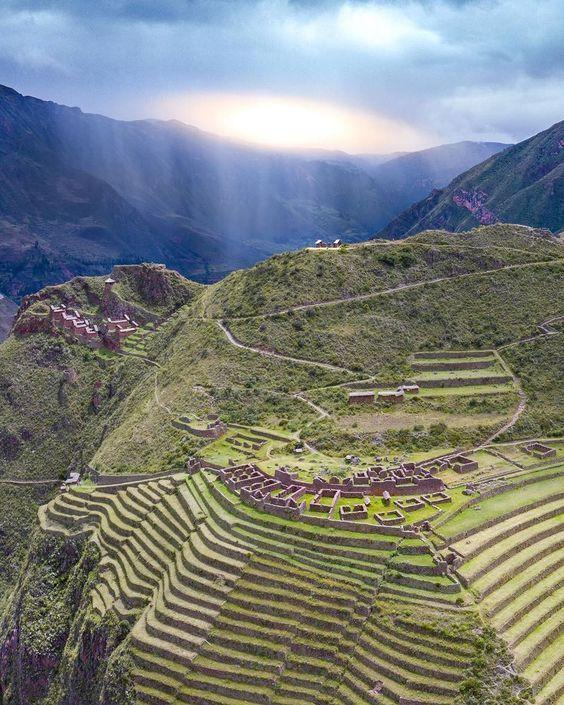
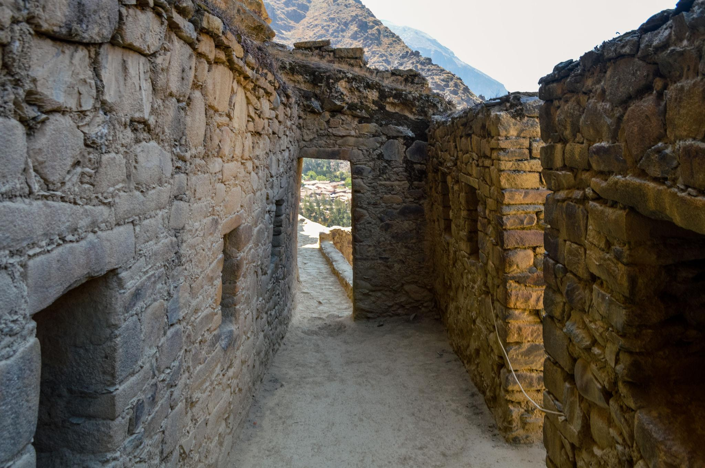
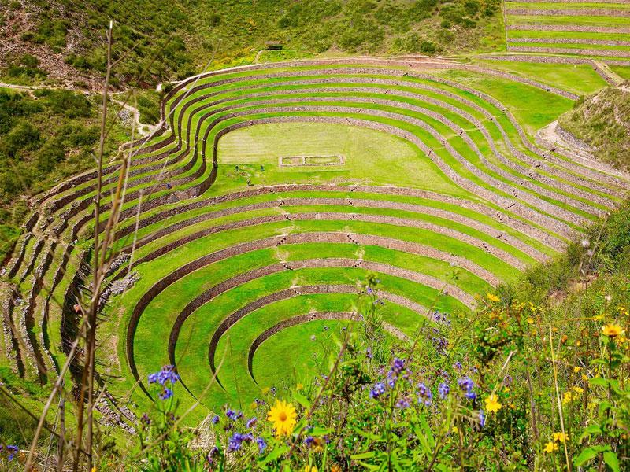
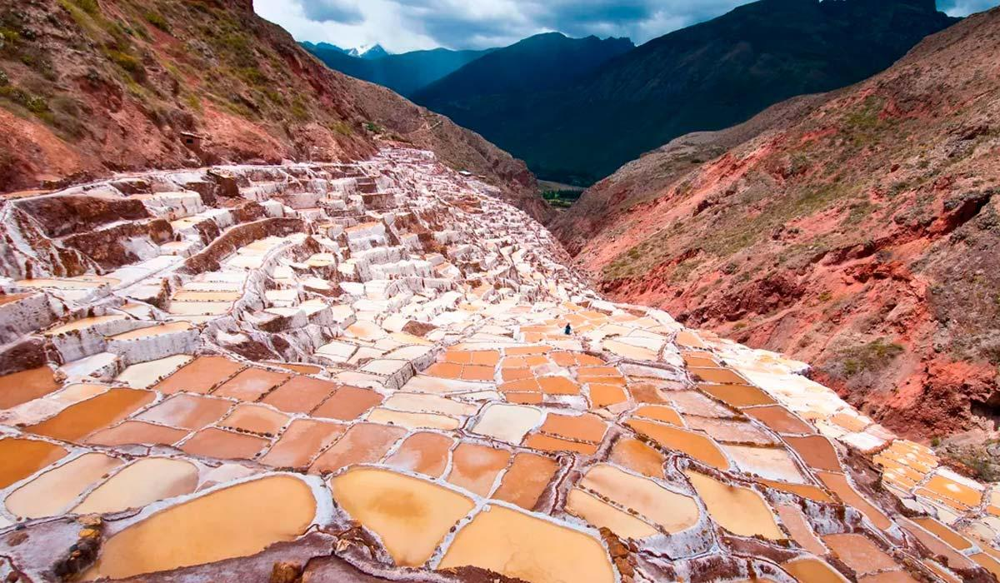
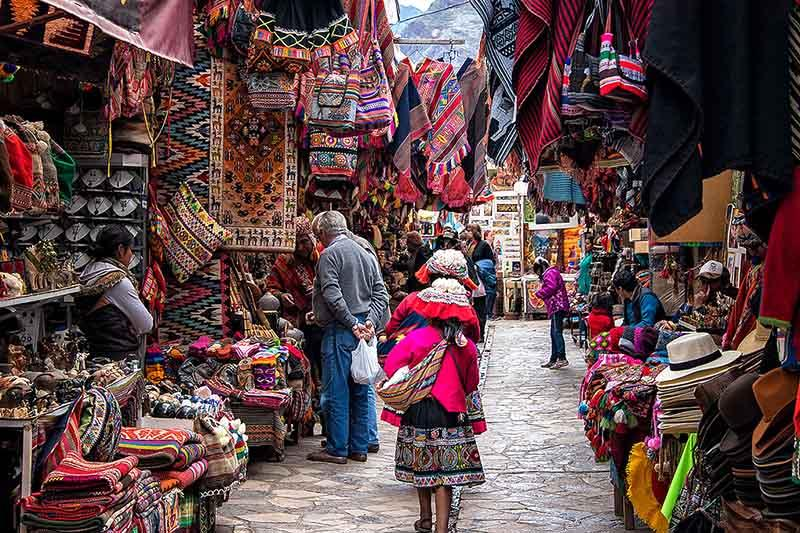

Descubre Pisac, Ollantaytambo y paisajes impresionantes
Reservar por WhatsApp⚠️ Salidas diarias – reserva con anticipación





Desde $80 USD
Incluye transporte turístico y guía profesional.
🔥 Tour muy solicitado – consulta disponibilidad
Consultar disponibilidad✔ Recojo desde el hotel
✔ Visita a Pisac (ruinas y mercado)
✔ Almuerzo buffet en Urubamba
✔ Visita a Ollantaytambo
✔ Retorno a Cusco
✔ Transporte turístico
✔ Guía profesional
✖ Almuerzo (opcional)
✖ Boleto turístico
✖ Gastos personales
✔ Operador local en Cusco
✔ Atención rápida por WhatsApp
✔ Experiencia organizada
El tour al Valle Sagrado de los Incas en Cusco es una de las experiencias más completas para conocer la cultura andina en un solo día. Este recorrido incluye visitas a Pisac, Urubamba y Ollantaytambo, tres de los destinos más importantes del turismo en Cusco.
Si estás buscando el mejor precio para el tour Valle Sagrado, ofrecemos opciones accesibles con transporte y guía profesional incluidos. Nuestros tours están diseñados para brindarte comodidad, seguridad y una experiencia auténtica.
El itinerario del Valle Sagrado permite conocer mercados artesanales, centros arqueológicos y paisajes impresionantes del Perú. Es una excelente opción si deseas aprovechar tu viaje al máximo en poco tiempo.
Puedes reservar tu tour al Valle Sagrado fácilmente por WhatsApp con atención inmediata. Consulta disponibilidad y asegura tu lugar con operadores locales en Cusco sin intermediarios.
Sí, el tour Valle Sagrado es una de las mejores excursiones en Cusco. Permite conocer importantes sitios arqueológicos en un solo día y es ideal antes de visitar Machu Picchu.